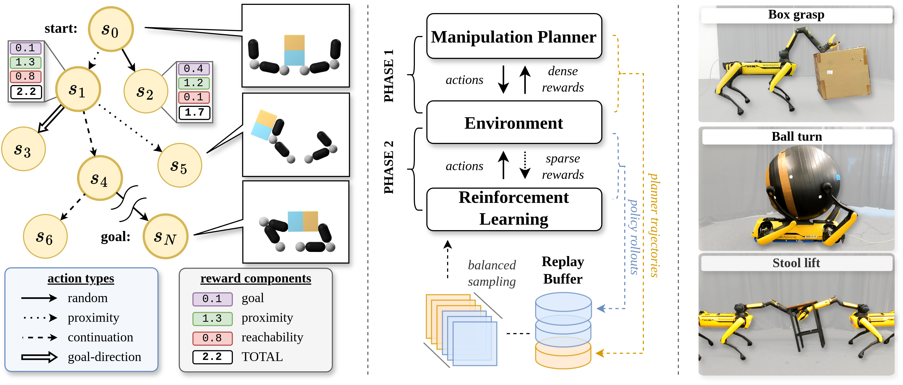
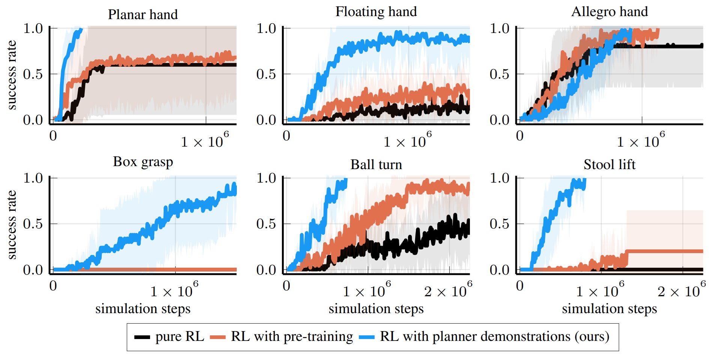

Robotic manipulation is challenging and data-driven approaches typically require large amounts of data or expert demonstrations. Therefore, we introduce a motion planner for dexterous and whole-body manipulation tasks. The planner's demonstrations can directly be used by reinforcement learning. With this approach, we can efficiently learn policies for complex manipulation tasks, where traditional reinforcement learning alone only makes little progress.
Our method of adding demonstrations significantly robustifies and speeds up training performance compared to pure reinforcement learning or using an additional pre-trained policy.
We train policies for dexterous in-hand manipulation and pick-and-place tasks and evaluate the policies in simulation.
Additional polcies for dexterous and whole-body manipulation are evaluated on real systems with zero-shot transfer.
@article{bruedigam2024jacta,
author = {Br\"udigam, Jan and Abbas, Ali Adeeb and Sorokin, Maks and Fang, Kuan and Hung, Brandon and Guru, Maya and Sosnowski, Stefan and Wang, Jiuguang and Hirche, Sandra and Le Cleac'h, Simon},
title = {Jacta: A Versatile Planner for Learning Dexterous and Whole-body Manipulation},
journal = {arxiv tbd},
year = {2024},
}